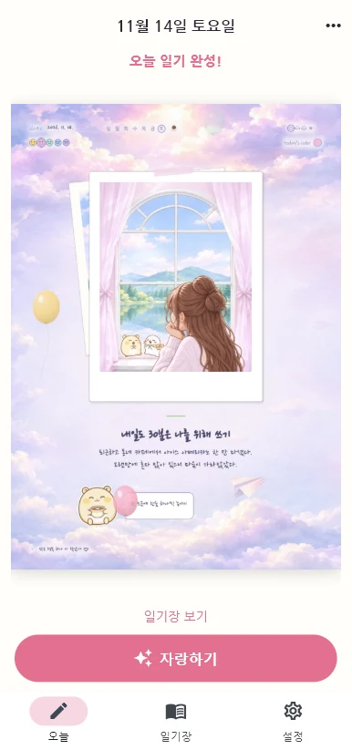
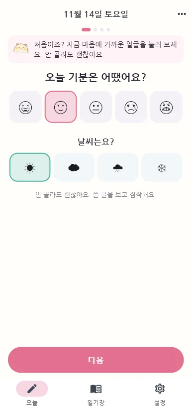
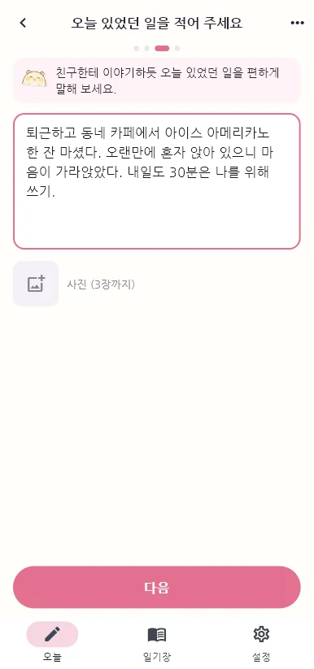
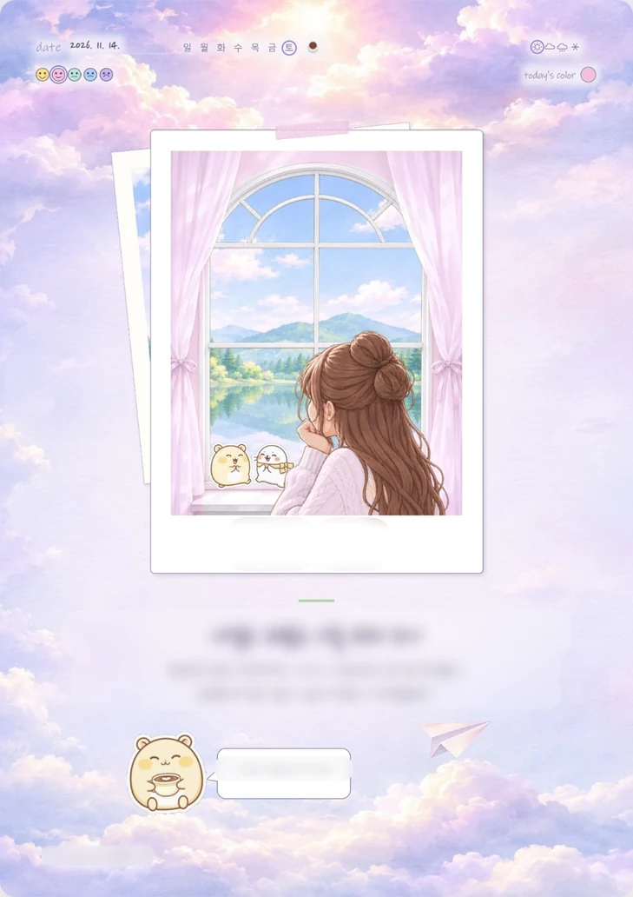
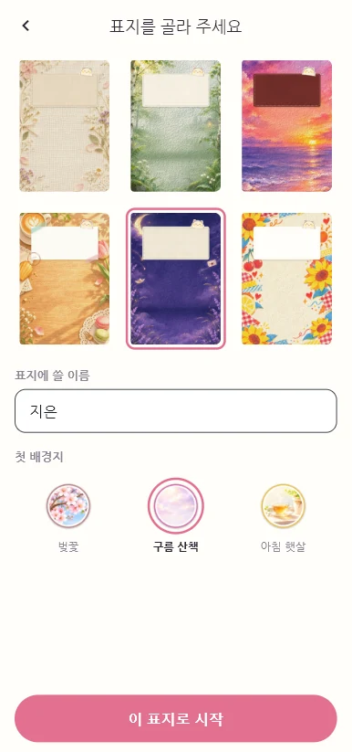
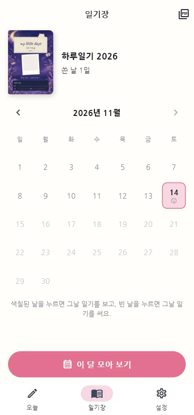
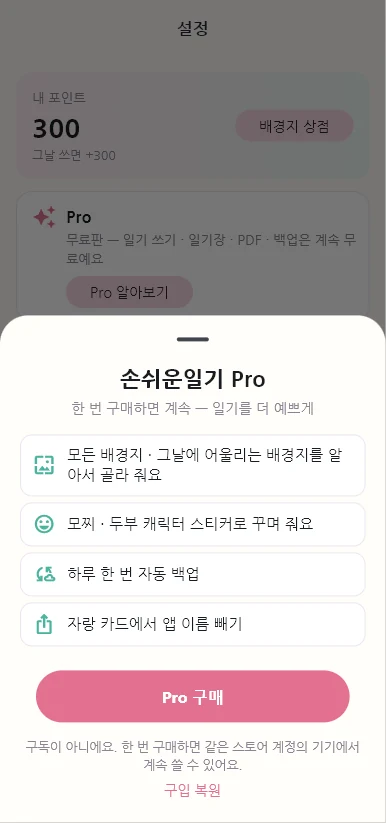

말하면, 오늘이
예쁜 한 쪽이 돼요
기분을 고르고 오늘 있었던 일을 말하거나 짧게 쓰세요. 배경지 · 스티커 · 모찌두부 한마디까지, 그날 쪽이 알아서 꾸며져요.
아이폰 · 안드로이드에 곧 나와요. 지금은 시험판을 다듬고 있어요.
다 꾸며졌어요!

꾸미기는 앱이, 이야기는 나만
일기를 쓰고 싶은데 꾸미기가 어렵고 매일 이어 가기도 힘들었다면, 이렇게 세 걸음이면 돼요.

기분과 날씨를 골라요
얼굴 다섯 · 날씨 넷 가운데 눌러요. 안 골라도 괜찮아요, 쓴 글을 보고 짐작해요.

말하거나 짧게 써요
큰 마이크를 누르고 친구한테 말하듯 이야기해요. 기기 안에서 글로 바뀌어요. 사진도 3장까지.
한 쪽이 완성돼요
그날 기분과 날씨에 어울리게 배경지 · 사진 자리 · 글씨가 놓이고, 모찌두부가 한마디 남겨요.

오늘의 나에게 어울리는 한 쪽
- 기분에 맞춘 배경지벚꽃 · 구름 산책 · 아침 햇살 … 그날 결에 어울리는 종이를 골라 깔아요.
- 움직이는 오늘의 창창밖 풍경이 계절과 시간에 맞게 바뀌고, 꽃잎 · 낙엽 · 눈이 살며시 움직여요.
- 모찌두부의 한마디그날 이야기를 읽고 공감 한 줄을 남겨요. 위로가 필요한 날엔 다정하게.
- 자랑 카드스토리 9:16 · 일기 쪽 · 이정표 카드로 만들어요. 글은 기본으로 흐리게 가려져 마음 편히 올려요.
쌓일수록 내 것이 되는 일기장
- 표지 6가지 가운데 하나를 고르고 이름을 붙여요.
- 쓴 날은 달력과 표지의 점 띠에 쌓이고, 며칠째 이어 쓰는지 보여요.
- 쪽을 넘기며 보고, 두 손가락으로 크게 봐요. 한 달을 모은 달 쪽도 있어요.
- 지난날 빈 칸에도 쓸 수 있고, 고치면 그 쪽이 다시 꾸며져요.
- 오늘 · 이번 달 · 전체를 PDF 로 저장하거나 보내요.


일기는 나만 보는 것이니까
FeelDiary 는 일기를 만든 사람에게도 보내지 않아요.
인터넷 없이 받아쓰기
말한 것을 기기 안에서 글로 바꿔요. 녹음을 어디에도 보내지 않아요.
일기는 내 폰에만
광고도, 이용 분석도 없어요. 일기를 읽는 서버가 없어요.
내 클라우드에 백업
구글 드라이브(안드로이드) · iCloud(아이폰)에 백업하고, 새 폰에서 되살려요.
AI 는 내가 고를 때만
원하면 내 ChatGPT · Claude · Gemini 로 일기를 다듬어 받아 와요. 안 써도 다 돼요.
무료로 충분히, Pro 는 한 번만
구독이 아니에요. 한 번 구매하면 같은 스토어 계정의 기기에서 계속 써요.
무료
- 말로 · 글로 일기 쓰기
- 일기장 · 달력 · 달 쪽
- PDF 저장 · 보내기
- 구글 드라이브 · iCloud 백업
- 배경지 3장 + 쓸수록 쌓이는 포인트로 더 열기
- 배경지에 어울리는 움직이는 꾸밈
Pro
- 모든 배경지 — 그날에 어울리는 것을 알아서
- 업데이트마다 늘어나는 새 배경지도 모두
- 모찌 · 두부 캐릭터 스티커
- 하루 한 번 자동 백업
- 자랑 카드에서 앱 이름 빼기

궁금한 것
인터넷이 없어도 쓸 수 있나요?
네. 받아쓰기 · 꾸미기 · 일기장 · PDF 는 모두 기기 안에서 돼요. 백업과 AI 다듬기만 인터넷이 필요해요.
말로 하는 게 어색하면요?
글자판으로 써도 똑같이 꾸며져요. 한두 줄만 써도 괜찮아요.
폰을 바꾸면 일기는요?
설정 탭에서 구글 드라이브나 iCloud 에 백업해 두면, 새 폰에서 '백업에서 되살리기' 로 그대로 가져와요.
어떤 언어를 지원하나요?
한국어 · 영어 · 일본어를 비롯해 18개 언어로 쓸 수 있어요. 모찌두부 한마디도 그 나라 말결로 써 두었어요.
손쉬운PDF 와는 어떤 사이인가요?
FeelDiary 는 PDF 서식 앱 손쉬운PDF(FillGrid)를 만든 곳에서, 하루일기만 쉽고 예쁘게 쓰도록 따로 다듬은 폰 앱이에요.
오늘부터, 하루 한 쪽
App Store · Google Play 에 곧 나와요. 나오는 날 이 페이지에 바로 받기 단추를 걸어 둘게요.